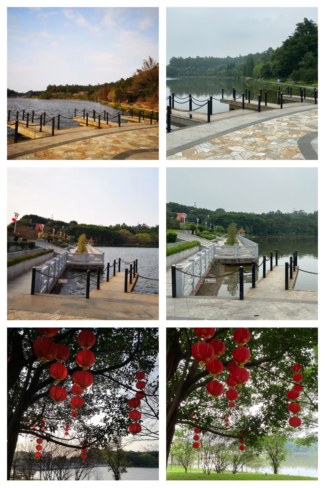
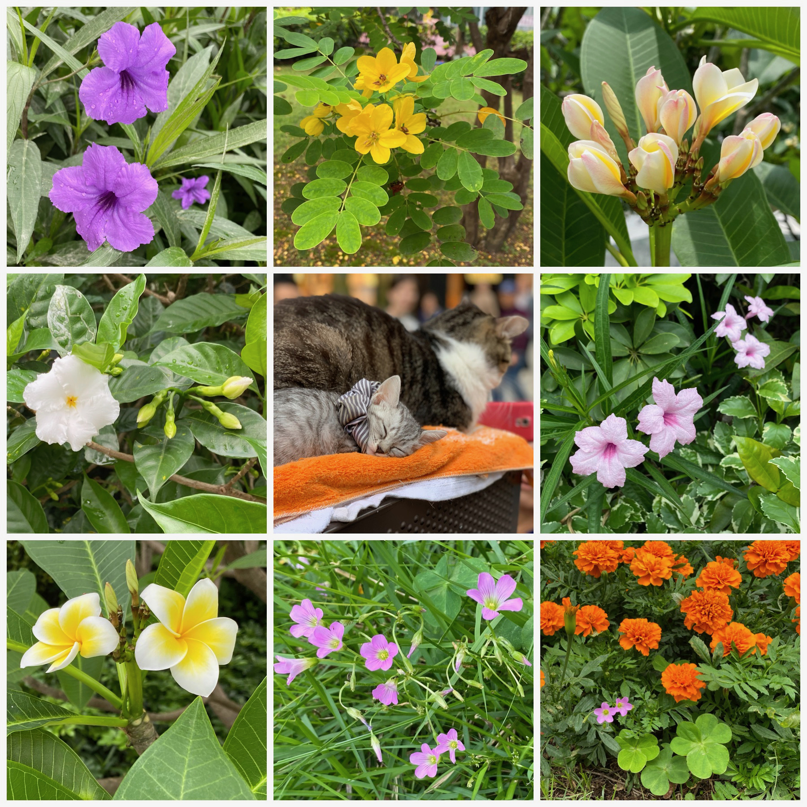
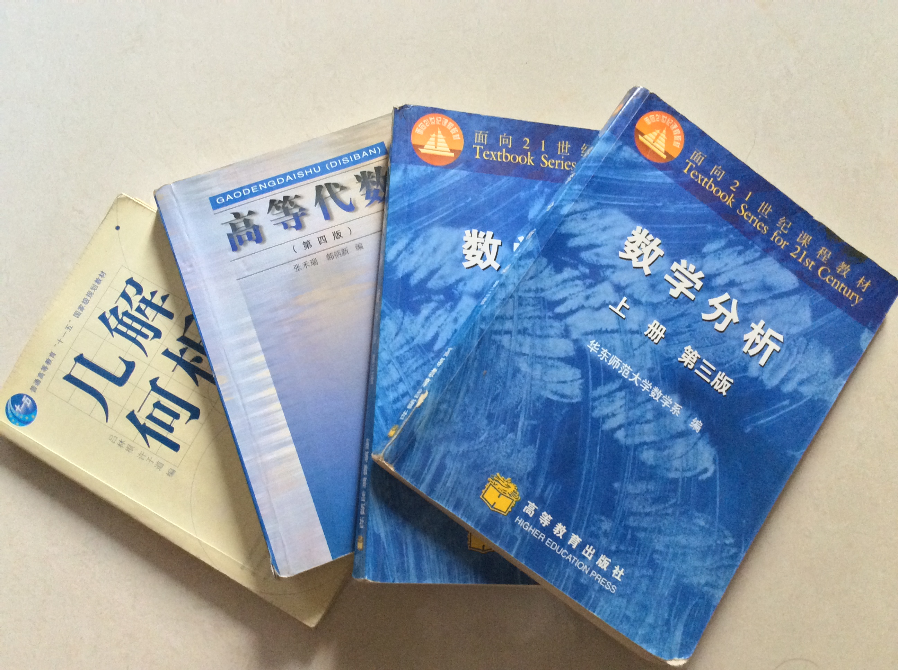
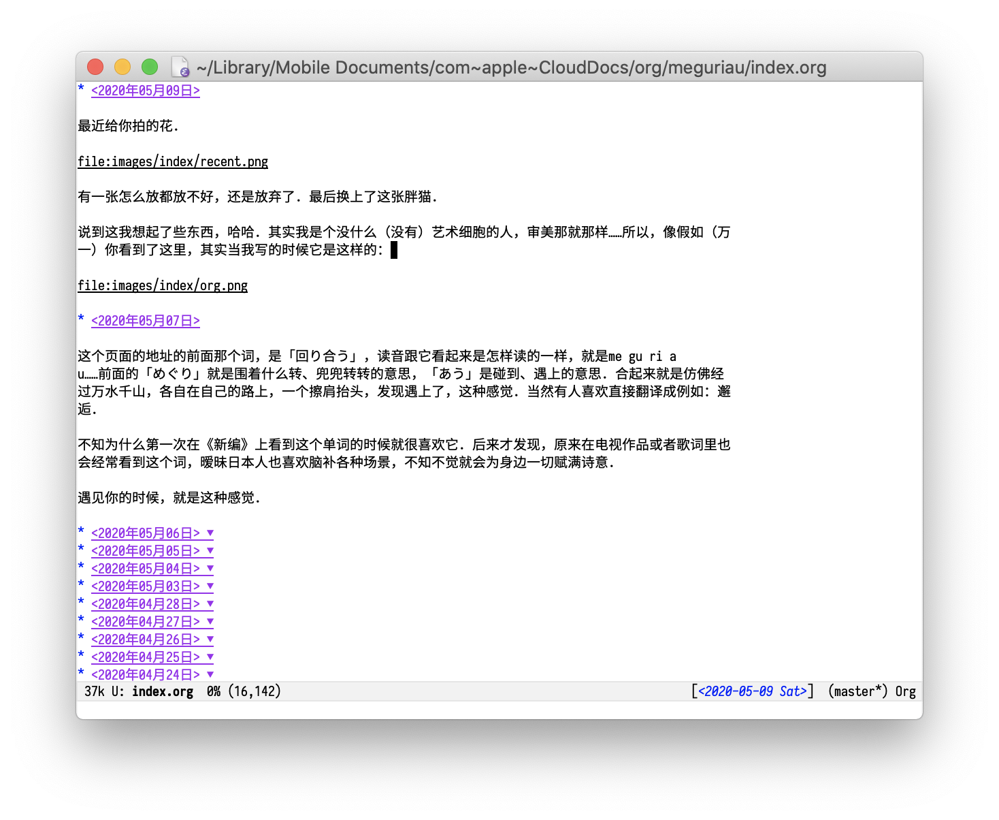
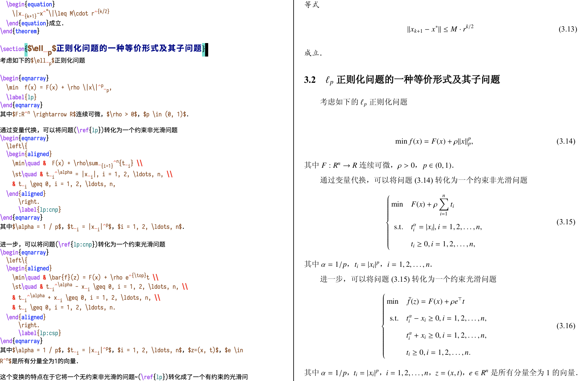
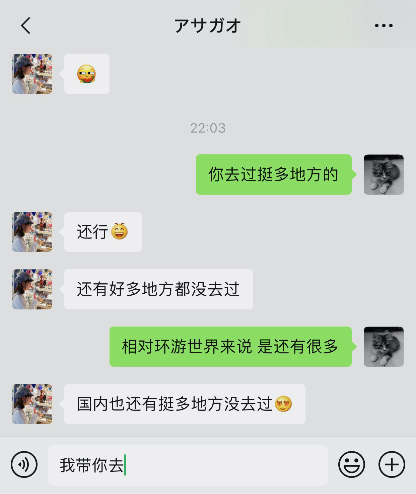
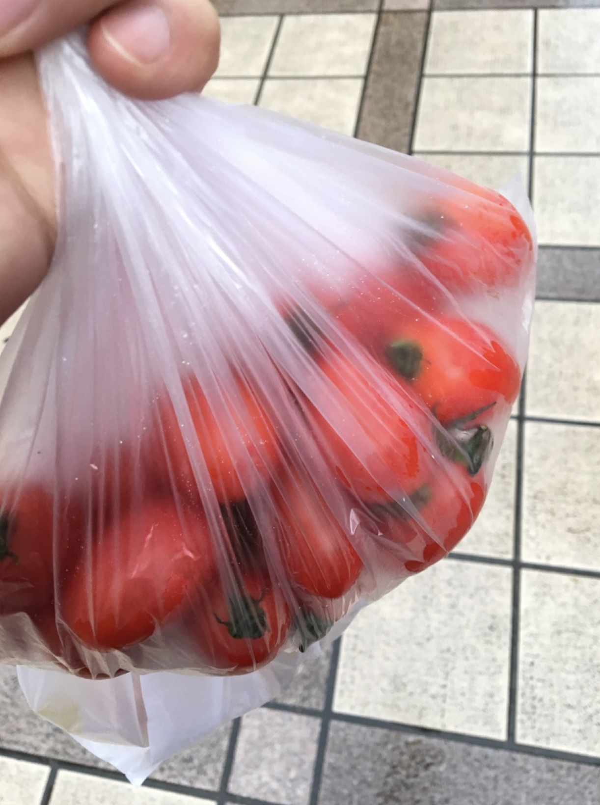

朝顔
如果你不想说，我也在听．
Sunshine
今天真的发现早上5、6点已经有蝉在叫了．不知道今天你想理我了没．
那天后来我很高兴，因为那是我第一次知道你有看这个．
一整晚没睡，为什么这么想你．辗转反侧的时候除了热，就是难过．雨已经停了，屋檐还在被打得滴答响，隔几分钟还能听到蝉在叫，跟与你相见的那一天一样．
对我来说唯一的无力感就是，当你不想理我的时候，我什么也做不了．是的，能做的一丁点儿也没有．
你就是不够想，你要是够想，你早就去了，丽华．
是缘，不是分呢．
卒業式、俺を誘ってくれるかな．

Figure 1: 你，与我走过的路
四个月快乐．跟你说了很多，还有很多不敢说．
我几乎没有主动过酒．是的，几乎．
第一次应该是大学毕业前几天，宿舍几人买了10来瓶酒和花生去到“观星台”，然后就喝了起来．现在回想起来当晚发生过什么，多数已经不记得了．能记得的是：那天晚上瞎聊了很多，然后我最后喝了两瓶酒，其他人差不多了也是这个数字；一个室友回去直接就睡倒了，死鱼一样；醉不醉就不知道了，两瓶酒对我来说体验就是像灌了一瓶大怡宝，想上厕所就对了．概括来说，那时候我们的所谓喝酒，就是有种“少年不识愁滋味”、“为赋新词强说愁”的感觉．
第二次是2018年春节前，那时工作有一点特别烦心的事情，有天晚上约了一个朋友，是我主动想喝酒．那个时候以为喝酒真的能消除烦恼，至少暂时性的那好．当晚我还抽了人生的第一根烟，まぁ……也就那样．至少我无法体会到别人说的烟酒所能带来的快感．我甚至怀疑我是不是无法对烟草、酒精甚至鸦片会上瘾，当然我不会为了证明这个而去尝试．只是觉得，有时候人如果能找到外物来短暂性地麻醉自己，会不会也并不是那么坏．当做不到的时候，那你只能每步每个脚步，都用自己的所谓（看似）“清醒”的内心去直面一切．
惊奇地发现，周日我们就认识了4个月了．本来想周日搞事情，看下5分的生气是有多生气，没想到这么凑巧．
四个月，大概就是在学校里从开学到放假，高考倒数的天数，两个暑假，四个寒假，完成两个项目，人生的大概千分之四的时间．
这次应该不会跟你说有件恐怖的事情了哈哈．我们认识四个月了，却还一次面都没见过．尽管如此，对我来说你是如此「大切」的存在．不知道我这个虚幻的网友，对你来说又是怎样的存在．可能线下是个抠脚大汉，也可能我还是个女的！
4个月，4年，40年．

错锋发送短信啊哈，12:34:56也是个不错的数字．
那两只猫咪是在银座拍的．那是刚去到日本的第一天，中午从成田机场走出来之后，就马不停蹄地坐车回到晴空塔附近，丢下行李住宿也没去就去了逛银座．在优衣库门口附近看到了这两只猫咪，非常安静地躺在那里睡觉，不时睁开眼睛张望一下，打个哈欠，可爱极了．路过的行人都会被它们所吸引，即使不驻足停留，也会边走边谈及两句：好可爱的猫咪．
有一次在YouTube上面看视频，就有个俄罗斯的妹子在日本生活了一段时间后，就变得很“日本”了．日本大概就是这样一个国度：连战斗民族都能给萌化．
我特别喜欢你认真（和生气）的样子．今天我又想起了这件事情：有次你特别认真地在工作，被我烦到了，就不太想理我，那时我觉得你实在太可爱了．那确实很“丽华”．倒不是因为我有本事看透了你，而是当心理预期突然被触及的那种心情，特别令人难忘．“你就是这样的一个小姐姐”．于是，反过来自然而然地把眼前的、接触到的当作真实．
那已经是两个月前的事情了，原来．不知道你有没有察觉到两个月里你有什么变化．
“花了挺多心思但可能最后毫无意义”．这两个月不知道你花了多少心思，不过至少从之前的结果来看，还不差吧．至于意义这种东西，“你说它有意义，它就有了”．我也不是个擅长发掘意义的人，不过意义这种东西，大概只能在过程中去挖掘．到最后可能就是“零”意义的事情，我觉得还是相对较少的．只那些不为零的细小部分，往往不是那么容易被察觉．
哈，你又要变回认真而又忙碌的小姐姐了．
请在6-10分中选择．
- 你是一个做事很有计划的人．（7-8）
- 当你的计划被打乱时，你的生气程度．（5）
- 当你的计划被打扰时，你的生气程度．(5)
今天睡到了9点多．起来之后梳洗什么的，发了一下呆就10点多了．
我不容易受别人的言语或看法影响，但会受行为与情绪等其它的影响．
对于前者，我跟你说大概有两种人会这样：
- 冷漠的人．
- 很清楚自己是什么在做什么的人．
我觉得我还是比较清楚自己是怎样的人的．这件事大概是在读研的时候想明白的．那种接受自己丑陋的一面的心情，一辈子都不会忘记．接受这一点的时候，才会认为到自己到底为什么而活着．但为什么我会在1和2之间徘徊呢．我也不是一个“很”冷漠的人．我有时也会想这个问题，至今没有明确的答案．目前我给自己的解释是，我血液里可能存在着一种与“与世无争”有关的细胞．
每次你跟我说开学的日子越来越晚的时候，就越感失落．而且，每次都是我问你才告诉我．
绿萝，应该平日里最常见到生命力最顽强的植物了．
去日本旅游的时候，因为去得太久了，回来的时候简直惨不忍心睹，叶子几乎(95%)全黄了，然后死死的贴在盆子里垂到地上．干得像碰一下就会粉碎似的．可是没舍得扔掉．或者这么说，与其说不舍得，可能是不忍心才对．感觉有生命的东西随便扔掉，就像谋杀一样．忍心剪掉了大半叶子，浇了点水．
我知道为什么了．因为你是一个热爱生活的人，而我是一个向往热爱生活的人．
今晚，安静一晚．
今天原来是汶川大地震12周年．
给你去找猫咪照的时候，又看到了以前的照片．大部分照片都备份了，只有少部分一直放在移动硬盘里没动，时间久了就变懒了．好在想找给你看，又让我重新翻到了它们．以前不怎么会也不怎么喜欢拍照（虽然现在也是），但居然会给各种奇奇怪怪的照片分文件夹装起来．“宿舍的猫”？“烦恼的天空”？“后山的树”？……现在想起来，大概以前也就是个假文艺．按下快门的心情，大多数还记得，少部分有点模糊．现在倒没有整理得那么细了．被归类起来的，大概只有毕业照、旅游这种．其它，零零散散在手机里．有时翻下来发现，没有归类好像也不那么重要，大概不一定总是要给每样东西都打上标签，心情或许是会变化的．
做了一个神奇的梦．虽然梦见过你很多次，但是奇奇怪怪的梦并不多．上次那个是其中之一．昨天晚上那个就更奇怪了．而且，持续时间整整一晚，这过程中间模糊中看过一次时间，三点多，到梦醒的时候一看已经六点多了．
四周是那种旧时欧美风格（这是要把全世界梦一次？）的小矮房屋，我也不知道怎样描述．就是有点像小城堡，但只有两层的，上面有个尖尖的像烟囱那样（这么一说又像小时候画的城堡了）．一眼望过去整条街都是这房子，没有其他人，只有我跟你．地面是那种长条形错开的石块铺成的．就是马车走过会一颠一颠那种．当时是夜晚，雪正在下，但不是很大．透过房子与房子之间的路灯的橙色光芒，可以看到雪花在飘落下来．对了，路灯还是点煤油的那种．只有前后延伸的一条街，左右房子之间的距离似乎太小了，看不到有路也确认不了两排房屋后有什么东西．我跟你就这样走在这条路上，在飘雪当中．
突然，注意到头上有气球飘过，于是我跟你抬头一看．啊！从这条路的后面源源不断地有飘过来，在我们头上，也没有停留，一直向前飘，可能叫飞才对，实在太快了．密密麻麻，像一群鸟那样，气球在我们头上嗖嗖地快速飞过．我就跟你追了上去，但没有赶上气球的速度．跑了不知道多久，最后来到一间屋的前面，这间屋的二层上有个就是刚刚说的，城堡二楼那种窗．所有气球都往里面挤！神奇的是，气球的数量如此之多，但是它们都要飞进去里面！而且后方还是源源不断的气球！因为窗口很小，有些还没挤进去的就围着烟囱、房子在转圈，像是在排队似的．我跟你，就一直在看着它们，有点惊讶，但只有点惊讶．然后就模模糊糊，后面不记得了．
感觉这个比上一次的还要奇怪，也不知道预示着什么．
今天母亲节耶，不知道你在家里会怎样陪妈妈过．
发现自己很久没有思考过数学题．好在还宝刀未老．高中的时候我是有点不喜欢数学归纳法，觉得这种证明实在太没意思了．后来上了大学，发现原来有更没有意思的证明，才没那么讨厌它了．以前很喜欢解析几何，觉得几种圆锥曲线实在太美妙，都是平面与圆锥体的交截线，都相似但又不一样．后来上了大学，发现大学的解析几何都是三维以上的，可能因为我想象力不够，慢慢就不喜欢圆锥曲线了．
我们不用学习高数，反而是学习数学分析、高等代数和解析几何．在这里面，最喜欢的就是数学分析了．数列极限这些可以说它最基础的内容，我喜欢它的抽象，但这种抽象不需要图形上的想象，只需要思维上，只要一支笔，就可以完成各种证明．缺乏想象的话，解析几何就有点难了．

大概我是枯燥而又缺乏几何直觉的人．
最近给你拍的花．

有一张怎么放都放不好，还是放弃了．最后换上了这张胖猫．
说到这我想起了些东西，哈哈．其实我是个没什么（没有）艺术细胞的人，审美那就那样……所以，像假如（万一）你看到了这里，其实当我写的时候它是这样的：

你会发现，图里面的这行文字： file:images/index/org.png 就是它自己．（有点递归的感觉哈哈：从前有座山，山上有座庙，庙里有个老和尚在给小和尚讲故事，讲的故事是：从前有座山，山上有座庙……）我喜欢在记事本里写东西，因为在里面我不用操心格式的事情（总有人跟我说用Word的时候会一边写一边调这调那，如果是纯文本，写起来就能很专心了），样式什么的……当然，如果你打开了这个页面，它看起来这么朴素，其实是因为我挑了个冷淡的主题……它还是样式的……
这就是为什么程序员都用Markdown而不用Word的理由了．写毕业论文的时候也是那样，只需要在记事本里写好文字，就会生成符合格式的PDF．

我实在不喜欢去调整标题字体大小，文字加粗，修改引用序号这种事……
大概是个枯燥的人．
这个页面的地址的前面那个词，是「回り合う」，读音跟它看起来是怎样读的一样，就是me gu ri a u……前面的「めぐり」就是围着什么转、兜兜转转的意思，「あう」是碰到、遇上的意思．合起来就是仿佛经过万水千山，各自在自己的路上，一个擦肩抬头，发现遇上了，这种感觉．当然有人喜欢直接翻译成例如：邂逅．
不知为什么第一次在《新编》上看到这个单词的时候就很喜欢它．后来才发现，原来在电视作品或者歌词里也会经常看到这个词，暧昧日本人也喜欢脑补各种场景，不知不觉就会为身边一切赋满诗意．
遇见你的时候，就是这种感觉．

昨晚梦见了你和一个你也认识的人，然后她让我给她写一张名信片．虽然我也不明白其中含义．
今天我丢了一个小番茄．
本来我洗了好几个，但是，有一个看起来有一点坏掉了．我就走到垃圾桶的旁边，把它随手扔了进去．奇怪的是，虽然是随手，但我看着它从我手里到落下到桶里，突然有点难过．其它它大部分看起来还是好的，至少被我洗得光亮，当它落到垃圾里面的时候，好的一面正好朝上，还有一点反光．
那一瞬间我突然感觉像做了什么坏事似的……怎么说小番茄也算有生命．虽然从本质上来说，进我的肚子，跟垃圾桶，似乎没有什么本质的区别．
今天我想起了另外一种我曾经不吃，但后来喜欢上吃的东西：小番茄．
以前的以前，在我的潜意识里，番茄这种食物是不存在生吃这种吃法的，小番茄也是“番茄”，自然也不能生吃．有个同学经常怂恿我说小番茄便宜又好吃，我还是无法想象一个生的番茄是如何放进口里的．
时间、地点、事情的起因、经过和结果，我也忘了，不知道哪一天起，我突然就吃了一个生的小番茄．哦，挺好吃的．我没有吃过生的大番茄，但是小的味道感觉跟大的很接近，但有一点儿不一样，只是我不会描述．后来，那个同学跟我说，潮汕那边的小番茄特别好吃．直到那天他给我拿了一袋，圆滚滚的，特别饱满，跟普通的小番茄不一样，跟圣女果也不一样，确实好吃．

在外面通常都买不到上面说的那种，只有这种椭圆的．不过，别的也算不上难吃．不知道你会不会喜欢吃小番茄．
今天取电脑，等通知前到书店里逛了几逛．到哪里都看到推荐《Educated》．拿了一本站到一书架旁边看了起来．上一次站这么久在看书应该是两年前了．那时候还住在学校，还能进学校的图书馆，而我总喜欢在那些矮矮的书架上摊开书来看．那是一种我觉得一定可以集中精神的阅读方式．有时坐在桌子旁边反而不一定能集中精神．对了，书架那里风扇特别大……另外，有时我喜欢偷偷的藏书在那个位置．我挑的位置总是没有其他人会去，所以我一直都在同一个位置里．真是一个怕热无耻又专一的怪人，不要脸那种．
只读了200页，对我来说，这本书有一个特别的地方，就是无论看到哪一行，都总像在看电影，脑海里缠绕着的是每个画面，每一帧的线条都是那么清晰．当然不排除只是我最近脑补能力在日渐增强而已．至于读后感，看完再说吧．
一百天，轻描淡写一点，会不会对你好点．对我来说，七十到一百这里，挺难过的．发现做事情的最好的情况通常不会出现在最后，总是像一条曲线，先上升又下降．就像唱歌，开始简单不堪入耳，后来好点，到开始掌握到节奏，就会发现喉咙开始不好使了．中间又手残觉得还好的又提前点了结束．最后只好硬着头皮挑了个完整的．正如其它事情一样，永远无法预测最优值何时出现，这日子就充满惊喜和失落．
保存的时候发现，早睡早起的日子，原来已经变远了．